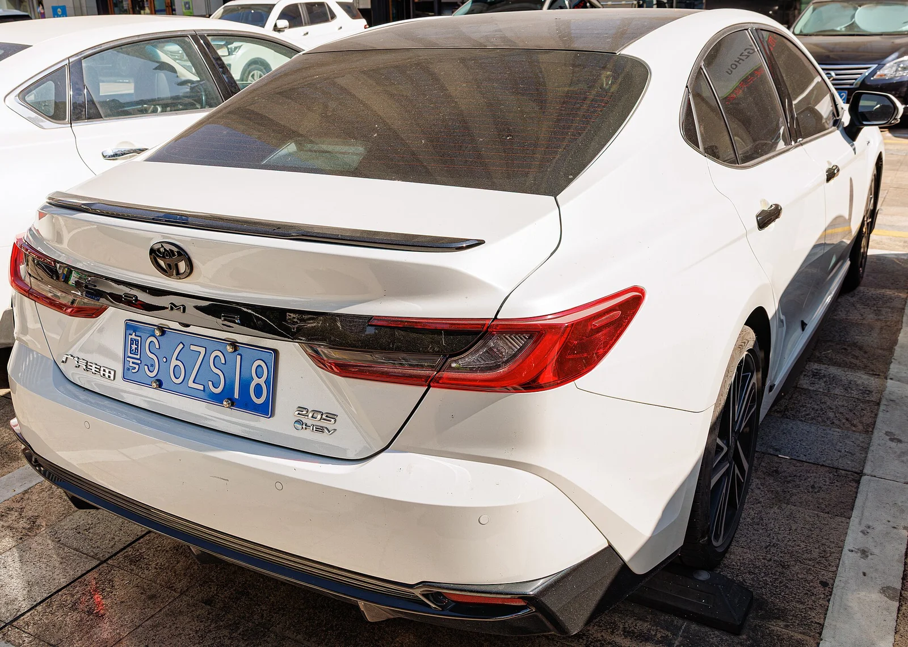
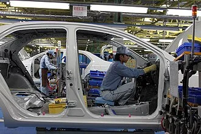

▲ 아이치현 도요타시의 토요타자동차 본사. 토요타는 7월 30일 6월 및 상반기 글로벌 판매·생산·수출 실적을 공개했다 ⓒ Tokumeigakarinoaoshima, Wikimedia Commons (CC0)
토요타자동차가 다이하츠공업을 포함한 2026년 6월 글로벌 판매가 전년 동월 대비 1.1% 감소한 92만 6,688대를 기록했다고 발표했습니다. 이는 지난 2월부터 시작된 판매 감소세가 5개월 연속 이어진 결과입니다. 반면 같은 기간 글로벌 생산은 전년 동월보다 2.2% 늘어난 98만 4,408대로 집계돼, 판매와 생산 지표가 정반대 방향으로 움직이는 이례적인 모습을 보였습니다. 토요타는 이 같은 엇갈린 실적의 배경으로 중동 지역의 지정학적 긴장과 중국 시장에서의 경쟁 심화, 그리고 일본·북미 시장의 신차 효과를 꼽았습니다.
1. 6월 실적 한눈에 보기 — 판매 92만 대, 생산 98만 대
토요타 브랜드만 따로 떼어 보면 6월 판매는 86만 8,454대로 전년 동월 대비 0.1% 증가해 사실상 보합세였습니다. 이 중 일본 내수 판매는 14만 8,862대로 17.2% 늘며 3개월 연속 증가세를 이어갔고, 해외 판매는 71만 9,592대로 2.9% 줄며 5개월 연속 감소했습니다. 결국 전체 그룹 판매가 1.1% 감소로 집계된 데는 다이하츠 판매 부진의 영향이 상당 부분 반영된 셈입니다. 생산 측면에서는 판매 위축에도 불구하고 재고 보충과 향후 수요 회복에 대비한 물량 확보 차원에서 가동률을 끌어올린 것으로 풀이됩니다.
| 항목 | 6월 실적 | 전년 동월 대비 |
|---|---|---|
| 글로벌 판매(다이하츠 포함) | 92만 6,688대 | -1.1% |
| 글로벌 생산 | 98만 4,408대 | +2.2% |
| 토요타 브랜드 판매(다이하츠 제외) | 86만 8,454대 | +0.1% |
| - 일본 내수 판매 | 14만 8,862대 | +17.2% |
| - 해외 판매 | 71만 9,592대 | -2.9% |

▲ 토요타 RAV4 하이브리드. 신형 RAV4와 bZ4X, 랜드크루저 FJ 등 신차 효과가 6월 일본 내수 판매를 17.2% 끌어올렸다 ⓒ MercurySable99, Wikimedia Commons (CC BY-SA 4.0)
2. 판매가 줄어든 진짜 이유 — 중국의 후퇴, 중동의 단절
토요타의 6월 판매 감소를 이끈 두 축은 중국과 중동입니다. 토요타·렉서스 브랜드의 6월 중국 판매는 전년 동월 대비 27% 급감했고, 중동 판매도 24% 줄었습니다. 중국에서는 비야디(BYD)를 비롯한 현지 전기차 업체들의 저가 공세와 물량 확대가 계속되면서 토요타를 포함한 일본 브랜드 전반이 점유율을 내주고 있는 상황입니다. 실제로 상반기(1~6월) 누계로 보면 토요타의 중국 판매는 69만 4,700대로 전년보다 17.1%나 줄어, 상반기 전체 판매 감소의 핵심 배경으로 지목됐습니다.
중동에서는 미국·사우디아라비아와 이란 사이의 갈등이 장기화하면서 물류·공급망이 흔들린 영향이 컸습니다. 유가와 원자재 가격이 치솟고 수송 경로가 원활하지 않은 탓에, 토요타의 일본발 중동 수출은 상반기 기준 36% 급감한 10만 4,093대에 그쳤습니다. 두 지역 모두 토요타 입장에서는 전통적으로 판매 볼륨이 큰 시장이었던 만큼, 동시다발적인 악재가 전체 실적에 그대로 반영된 모습입니다.

▲ 중국 선전에서 포착된 토요타 캠리(XV80). 현지 전기차 업체의 공세 속에 토요타의 6월 중국 판매는 전년 대비 27% 줄었다 ⓒ Dinkun Chen, Wikimedia Commons (CC BY-SA 4.0)
3. 생산은 왜 늘었나 — 북미·일본에서 웃은 모델들

▲ 미야기현 센다이 인근 오히라 토요타 공장의 조립 라인. 판매 감소에도 불구하고 재고 확보 차원에서 6월 글로벌 생산은 오히려 2.2% 늘었다 ⓒ Bertel Schmitt, Wikimedia Commons (CC BY-SA 3.0)
판매가 주춤한 것과 달리 생산이 늘어난 배경에는 일본·북미 시장에서의 견조한 수요가 자리하고 있습니다. 일본 내수에서는 RAV4, bZ4X, 랜드크루저 FJ 등 신차·개조 모델이 판매를 뒷받침하며 3개월 연속 내수 판매 증가를 이끌었습니다. 북미에서도 하이브리드 차종과 캠리, 4러너가 판매를 견인했는데, 실제로 토요타모터 북미법인(TMNA)이 발표한 6월 미국 판매는 21만 2,793대로 전년 대비 10.1% 늘었습니다. 이 중 전동화 차량(하이브리드·PHEV·EV) 판매는 12만 2,063대로 35.0% 증가해 전체 판매의 57.4%를 차지했고, 캠리는 3만 1,573대(+19.6%), 코롤라는 1만 9,873대(+2.2%)를 기록했습니다. RAV4 하이브리드는 월간 최다 판매를 새로 썼습니다.
이처럼 판매가 견조한 시장에서의 물량 대응, 그리고 하반기 이후 중국·중동 수요 회복에 대비한 재고 확보 차원의 생산 조정이 맞물리면서 6월 글로벌 생산이 판매 감소에도 불구하고 늘어난 것으로 풀이됩니다.
| 항목 | 6월 실적 | 전년 동월 대비 |
|---|---|---|
| 총 판매 | 21만 2,793대 | +10.1% |
| 전동화 차량(HEV·PHEV·EV) | 12만 2,063대 | +35.0% |
| 캠리 | 3만 1,573대 | +19.6% |
| 코롤라 | 1만 9,873대 | +2.2% |
4. 상반기 결산과 하반기 전망 — 1위는 지켰지만 웃지 못하는 이유
6월 실적을 포함한 2026년 상반기(1~6월) 누계를 보면, 토요타그룹은 계열사 판매를 합쳐 539만 대를 기록하며 폭스바겐그룹을 제치고 7년 연속 상반기 글로벌 판매 1위 자리를 지켰습니다. 다만 토요타 브랜드만 놓고 보면 상반기 판매는 501만 대로 전년 대비 2.9% 줄어 2년 만에 첫 상반기 감소 전환을 기록했고, 그룹 전체 생산량도 551만 대로 0.3% 소폭 감소했습니다. 판매 1위라는 타이틀은 지켰지만, 중국발 부진과 중동발 리스크가 겹치며 성장세 자체는 꺾인 셈입니다.
종합하면 이번 실적은 단순한 판매 증감을 넘어, 토요타가 처한 시장 환경의 변화를 압축적으로 보여줍니다. 중국에서는 현지 전기차 업체와의 경쟁이 격화되고, 중동에서는 지정학적 리스크가 공급망과 수요를 동시에 흔들고 있는 반면, 일본과 북미에서는 신차·하이브리드 효과로 상대적으로 안정적인 흐름을 유지하고 있습니다. 하반기 실적이 이 같은 지역별 명암을 좁힐 수 있을지, 아니면 격차가 더 벌어질지가 다음 발표의 관전 포인트입니다.